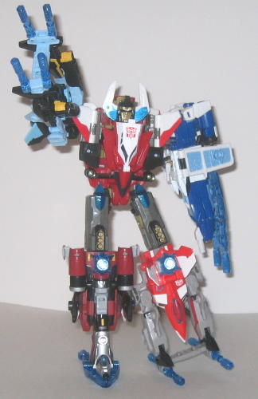
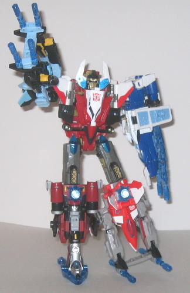

Difficulty of Transformation : Hard
Rating : 7.1
The leader of the new
Aerialbots, Storm Jet, is, of course, a jet in vehicle mode. It's pretty
futuristic, in a slightly-Japanese sort of way. But it's a pretty solid
jet mode, especially for a combiner torso. The overall streamlined look
of the jet mode, as well as its very long nosecone, really helps to give
it some individualism. He's got a fair amount of mold detailing, although
some areas are a little sparse in it. But hey, at least he has transparent
windows, which look pretty cool. He's got plenty of paint detailing, though--
nearly all of the white you see on him is painted on. And the red, white,
black, and gray go together to form a pretty good color scheme, even if
it's a bit unoriginal for an Autobot. The overall streamlined jet shape
is uninterrupted for the most part, but there are a few minor parts where
some robot parts peek through. The more obvious instance is the wings--
the robot mode shoulders and upper arms attach the wings to main body,
and they don't quite fit in shape with the pieces around them. The front
of the robot legs also stick out from the bottom rear of the jet a bit,
and although they don't upset the overall shape much, they are just barely
above the ground level even if you have the retractable landing gear deployed.
Another, more minor, beef I have is that the pegs used to link Storm Jet
with the combiner arms stick up rather obviously form the top of the wings,
which kind of ruin the streamlined look in that area. But, on the other
hand, the pegs used to connect Storm Jet to the combiner legs, which stick
out the back of this mode, look like jet thrusters from a rear view, and
that's kinda of cool. But still, a very solid alt mode. Storm Jet's blue
Powerlinx symbol is on the top of the cockpit behind the Autobot symbol,
and his Autobot spark crystal is right behind his Powerlinx symbol.
Storm Jet's robot mode,
on the other hand, I do have some problems with. The head has a nice design--
I love the golden eye ridges-- and the chest looks pretty good, and the
proportions are pretty good. But the arms end in just blocks, with fists
molded on the insides. I could accept this for a Minicon, but a deluxe-sized
toy needs to have real fists, in my opinion. The legs are also tad short
proportionally, and there's also a factory assembly error that seems to
be prevalent on nearly all of the Storm Jets released in the United States--
the knees bend in the wrong direction. And, given that Storm Jet has little
angular knee caps jutting out from his lower legs, this means they can't
even bend very FAR in the wrong direction. There is a fix for this, but
it's pretty complicated, so I haven't bothered with it. Here is how to
fix it if you're daring enough-- thanks to Depthcharge of the
TFW2005
Boards
for posting the fix back when it was first discovered:
Step 1 . Unscrew and remove the two lower-leg halves from each leg and set them aside. Remember their orientation.
Step 2 . Unscrew and remove the back covers from the black upper-leg/thigh pieces
Step 3 . Remove what's left of the lower leg from within the black thigh pieces and switch them, make sure the knee piece bends in the right direction.
Step 4 . Replace the black thigh covers. Careful with replacing these, each thigh cover is fastened by two screws and they ARE different sizes. The big one goes in the top hole.
Step 5 . Replace the lower leg covers, make sure you put them on the right way so that the triangular knee gaurd is in the front (not conflicting with the knee joint anymore).
It's a big downer, though, as real knee
articulation would have given this guy quite a few more good poses. But
otherwise, he does have pretty good articulation-- he can move at the head,
shoulders (at two points), elbows (at three points), hips (at two points),
and side-to-side and the knees. Another problem I have is that we see a
lot of the ugly hollow detailing on the front of the jet mode backpack--
there's no real pipes or other mechanical details molded in there to make
it look cooler, just a bunch of pegs and hollowed out spaces, giving Storm
Jet more of a "toyish" look that he wouldn't have had otherwise. But my
biggest beef with this mode is that Storm Jet's entire body is hollow-
the chest covers up the fromt, and the head the top, but if you look at
him sideways, you can see straight through his body. Little fold-up panels
are used to try to give the illusion that his body is indeed solid, but
they really don't cover up much at all, and since they don't lock in place,
they tend to wiggle around a little inside his hollow chest if you move
his arms a bit, which is a little annoying. So although the robot mode
does have some positives, overall it could've been better.
Storm Jet has a great
vehicle mode, but his robot mode has several problems, like a hollow chest,
knees that don't move, and a ugly-looking backpack. He's still an okay
figure considering that he forms a combiner torso, though, and his rating
probably would've slightly topped
Steamhammer's
if it wasn't for that assembly error.
 Superion
Maximus (Combination of Storm Jet, Terradive, Sky Shadow, Treadshot, and
Windrazor)
Superion
Maximus (Combination of Storm Jet, Terradive, Sky Shadow, Treadshot, and
Windrazor)

Difficulty of Transformation
: Hard
Rating
: 7.1
Once you get all 5 Energon
Aerialbots, you combine them to form the mighty Autobot gestalt Superion
Maximus-- which is about as tall as Energon
Megatron
/
Galvatron
in robot mode. Overall, this is an OKAY gestalt. (The limbs can be combined
in any particular combination-- the particular configuration above is just
the one on the box.) My main beef with it is that the
Treadshot
/
Windrazor
mold makes a pretty crummy appendage-- as a leg, it has a big hollow spot
in the center and is entirely too wide at the foot, and as an arm, it has
no discernable hand, just a few oddly-spaced guns. The
Terradive
/
Sky
Shadow
mold makes a much better appendage, either as an arm OR a leg.
As a leg, the proportions are fairly good, even if it's a bit wide at the
knees, and there isn't too much robot mode junk hanging off it. As an arm,
it's a little more questionable, as the "hand" only very vaguely resembles
one. Basically, there's two different arm configurations for this mold
as an arm-- either you can follow the back of the box example (pictured
above) and place the folded-out Energon weapon on top of the plane, thus
making the front two guns on the Energon weapon "fingers" and the plane-mounted
underside machine gun the "thumb", or you can attach the weapon onto the
underside machine gun itself, giving Maximus an odd-looking claw that is
only half-connected to his actual arm. Needless to say, I prefer the former
configuration. Storm Jet forms a pretty good torso, even if Superion Maximus
doesn't have waist articulation like the other two Energon gestalts. The
plane-chest comes loose from its peg REALLY easily in this configuration,
though, which is probably the most annoying aspect of this gestalt. The
gestalt head itself has a unique design-- I love the large horns on the
side of the head, and the calm docile face-- not something you'd expect
on a gestalt, even an Autobot one. The color scheme itself goes together
pretty well; none of the colors from one toy clash with any from the other.
(Though Windrazor's red needs to be less... pink...) Superion Maximus has
pretty good articulation for a gestalt, even if it's not as good as Constructicon
Maximus or
Bruticus Maximus
; he can move at
the hips (at two places), the knees (at two places), the shoulders (at
two places), and the head. So you can't get THAT many poses out of him,
but it's a 5-bot gestalt, so that's pretty hard to do.
Superion Maximus is
a decent gestalt, as all the parts seem to fit together fairly well, and
none of the colors clash. But most of the appendages are pretty questionable,
and the chest coming unlocked easily is very annoying. My least recommended
of the Energon gestalts, though he's by no means bad.
No Stats
Reviews by Beastbot